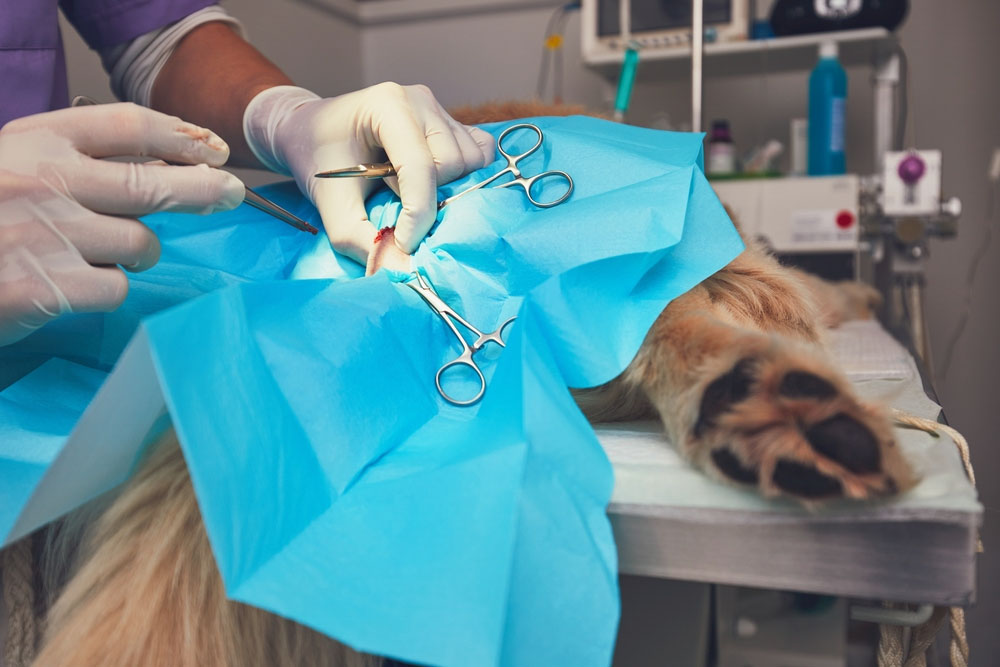

Cirugía
Desde procedimientos de rutina como la esterilización hasta intervenciones complejas como la extirpación de tumores, se enfoca en la seguridad del paciente y un cuidado postoperatorio adecuado para una recuperación exitosa.
Ver más
Vacunación felinos

Administración de vacunas para prevenir enfermedades comunes y graves en gatos, garantizando su protección continua.
Ver más
Vacunación caninos

Administración de vacunas para prevenir enfermedades comunes y graves en perros, garantizando su protección continua.
Ver más
Consulta

Los veterinarios realizan un examen exhaustivo para evaluar la salud de la mascota y ofrecen recomendaciones de tratamiento.
Ver más